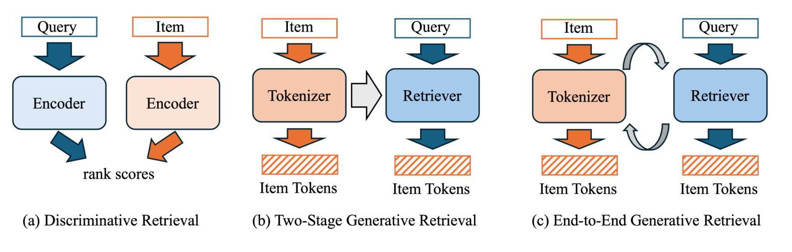
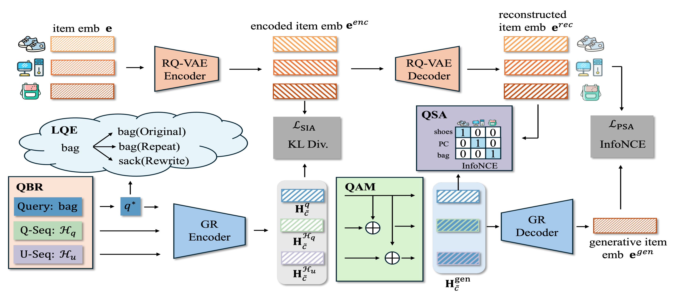
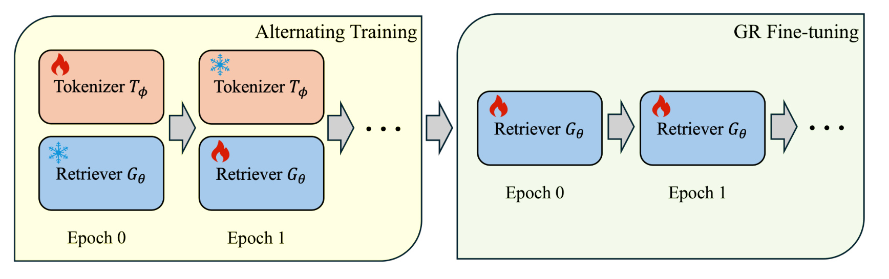
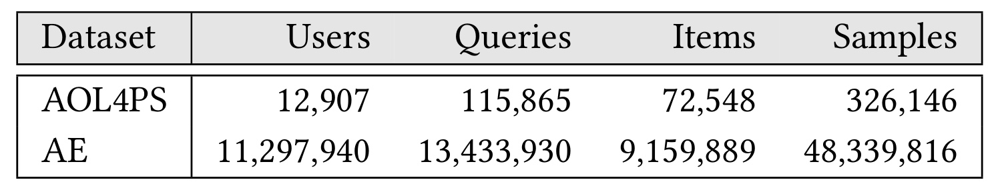
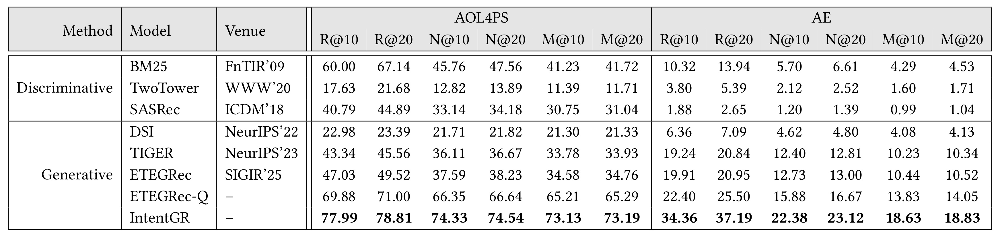
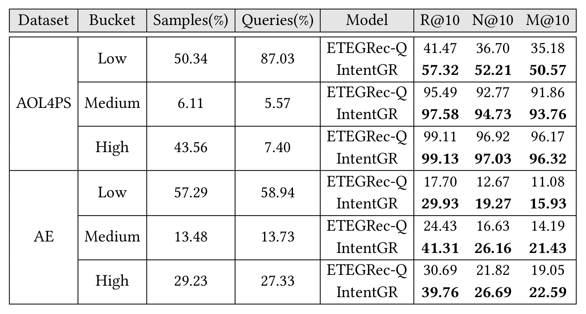
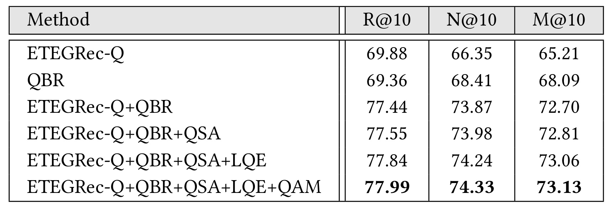
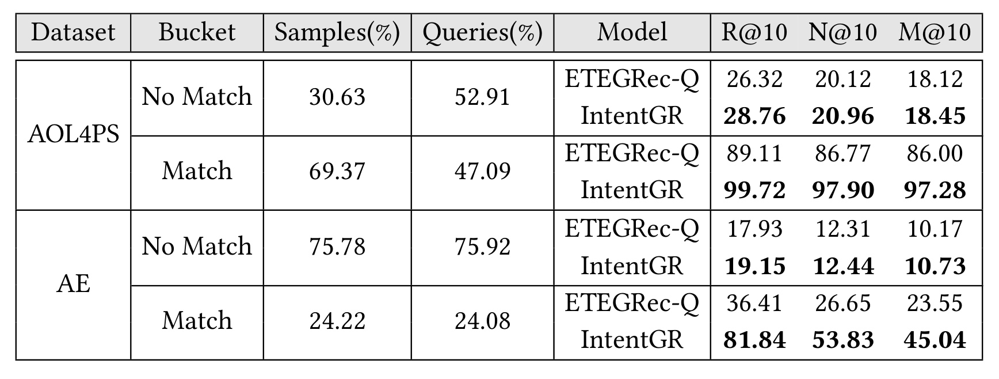
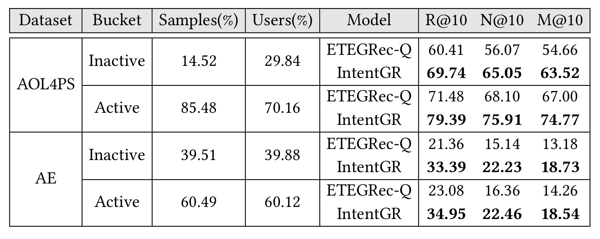
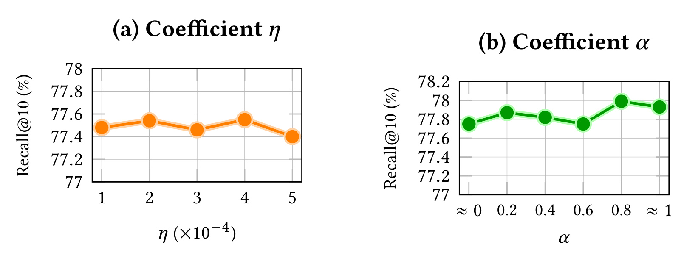

IntentGR：搜索中的意图增强与端到端个性化生成式召回
IntentGR: Enhancing Intent for End-to-End Personalized Generative Retrieval in Search 讨论怎样根据当前查询与用户历史，直接生成相关商品或文档的语义标识符。Gefan Ye 同时署名浙江大学与阿里巴巴国际数字商业集团，论文注明工作在阿里国际实习期间完成。其余作者为 Yanjing Wu、Yinfu Feng、Zhiqiang Wang、Liang Li、Jun Xiao、Rong Xiao 和 Xiaoyi Zeng。以下以 2026 年 11 月 17 日首次提交的 v1 为准，arXiv 备注载有作者的 WSDM 2027 Findings 录用声明。核对论文、arXiv 记录和公开检索结果后，尚未核验到论文专属公开代码或项目页。论文原文与版本记录
个性化搜索需要同时满足用户此刻的查询意图与长期偏好。已有端到端生成式检索往往只把查询作为普通输入，标识符学习与序列生成都缺乏明确的查询引导，生成的标识符容易随高频编码模式偏离当前意图。
1. 背景和问题
1.1 同一份用户历史，应当支持不同查询
个性化搜索的条件包含一条即时查询和该用户此前的交互序列。对同一个人而言，过往购买和点击记录可以帮助系统在符合查询的结果之间辨别偏好，但每次检索首先面临的是当前查询所限定的需求。只使用历史的顺序推荐模型面对两次内容完全不同的搜索，可能收到相同的用户输入，因而倾向于返回同一批习惯上常见的结果。只使用查询的词项匹配又可能把两个有相同文字表达、购买偏好却相异的人推向相似的列表。IntentGR 的任务是根据这一联合条件找出日志中的目标实体，并关注它能否进入列表的前十或前二十。文中任务定义允许点击和购买作为正例，AE 的实证数据明确描述为点击日志。一次观测只指明该样本对应的目标，其他未被点击的结果有可能也符合意图，这为解释后文的召回率留下了边界。

Figure 1 从左到右把差别落在输出和训练依赖上。左侧的查询编码与商品编码汇合为候选打分，排序依赖已有候选与匹配函数。中间先把每个商品转换为编号，检索器训练时拿到的是已经确定的编号目标，查询侧即使发现某类商品更容易被混淆，也无法通过检索阶段把信息传回编号构造过程。右侧仍产生同样形式的商品编号，但双向箭头表示检索器与分词器在训练中彼此适配，编号会随训练阶段更新。三个面板省略了用户历史、候选约束和具体损失，主要用于比较范式。对于固定目录，能够生成编号只是检索链的一段，后续还要把合法编号映射回实体。若两个相关商品的首个编码就分叉，解码器必须在前缀还很短时作出选择，早期候选被丢弃后，后续位置就无法补救。反之，多个商品共用前缀也可能方便复用统计强的决策，是否有益取决于这些前缀是否符合当前任务的区分需求。图中的双向依赖解释了本文为什么要在编号空间和生成上下文两处加强查询信号。
1.2 从固定编号到查询参与训练
论文把候选对象离散化为多级语义标识符 SID。从文本或协同行为得到的向量开头，经残差量化得到一串有限词表里的编号，生成器按位置预测编号。相较于直接给数百万个商品各分配独立输出类别，多级码字可被多个实体共享，模型有机会把类似历史模式积累到共同前缀。共享也带来偏差。同一个高频码可能覆盖不同查询下的多个实体，序列损失在常见查询上积累了更多更新时，解码器可能优先走高频前缀。量化端若主要重建商品向量，就会保留有助于重建的属性，但未必把区分当前查询结果所需的属性放到生成器容易学到的位置。把查询文本接进编码器能告诉模型用户问了什么，论文还希望让它参与监督商品重建表示与选择解码条件。
TIGER 在作者的脉络里代表先学 RQ-VAE、再训练生成器的路线。ETEGRec 用对齐监督和交替更新使两边协同，原型用于顺序推荐，训练条件以用户行为为主。搜索路线也有方法在标识学习里使用查询，例如引言讨论的 ASI++，其背景是文档检索，论文强调它与本文是否使用用户行为的差别。在本文的实证里，给 ETEGRec 接上查询构成 ETEGRec-Q，这一行比直接拿推荐版比较更能检验后续想法。但完整模型比它多了一段来自跨用户日志的可观测行为。于是论文需要回答两个不同的问题，即额外信息是否值钱，以及有了这份信息以后，用什么训练或解码手段才能继续改善表现。若只看完整模型与 ETEGRec-Q 的差，会把数据获取能力、训练目标和结构融合一并算成一种架构收益。
1.3 为什么同查询点击有用，又在哪些地方变弱
同查询行为序列可以把陌生的文字表达和已被点击的实体连起来。比如电商查询往往短而口语化，用户的表达与卖家堆叠出的商品标题之间可能缺少直接词面对应。一段严格发生在本次请求前的同查询点击历史会把一些过去实际发生过的查询到商品的关系带进模型。用户个人历史则提供消费或浏览倾向，帮助决定过去同查结果中哪些更适合眼前这个人。两段行为可以交叉提供线索。对于同一词形有多个意图的查询，共享历史也可能混有几个互不相干的分支，近期促销或旧排序策略还可能改变其中物品的相对频次。利用点击历史的模型有机会学会在个人上下文里选择，但训练标签本身依然来自日志里的实际行为，因而分不清商品的流行度究竟来自内在相关、历史曝光还是其他干预。
在样本很少的查询上，共享历史可能只有几个 item，也可能完全没有。对这两种情况都说“长尾收益”会抹平关键差异。一个训练低频查询可能已经拥有当时可见的目标历史，而另一个出现过多次的查询仍可能在本次指向新的目标。训练集上的查询次数、当前请求的同查询历史长度、目标是否出现在截断后的历史以及用户历史长度，是四个可以同时变动的量。论文的频率分桶和行为匹配分桶分别观察其中两类信息，因此频率低的改善只能说明这个频率组获益，能否从无目标线索的上下文找到候选要另外找证据。线上系统如果晚写回点击、改了文本归一化或丢掉低频查询缓存，这些切面比例都会变，表上的平均增益也会随之偏移。
本文的落点仍是召回。生成器选择的是能回查到实体的编号，指标衡量已记录目标被召回的位置。它既不直接评估最终页面的组合、多样性和展示顺序，也没有单独考核新商品入库后的覆盖。对推荐系统而言，可借鉴的是如何把跨用户条件统计和用户序列送进同一个生成模型，以及怎样在共享码本训练时把场景意图显式写入目标。对检索系统而言，需要同时关注索引可用性和解码预算。即便模型能够根据查询产出语义相近的前缀，若编号与实体映射使用另一个版本，或者测试商品未进入索引，相关前缀也兑现不了这条样本的命中。原论文把这些问题抽象为合法编号空间，便于集中研究意图接入，后文的实验结论也以该任务边界为准。
2. 方法
2.1 生成式检索与查询行为输入

Figure 2 上方是目标商品支路。商品先有连续向量，经 RQ-VAE 编码、残差量化和重建，相关表示分别参与序列分配对齐、查询对齐和生成表示对齐。下方从左开始的三行对应查询文本、同查询行为和用户交互。查询文本在训练时可以按 LQE 的规则被复制或改写，配套的两段行为依然沿各自路线进入同一个编码器。编码后的原始查询区域在 QAM 中保留，池化出的查询语义注入其余位置，改造后的整段记忆供解码器读取。图中的 QSA 对比网格把批内配对放在对角线上，用匹配目标的重建向量监督查询分支。正文公式将 QSA 的查询向量定义为原始编码器输出中查询位置的投影，图上连接 QAM 后上下文的查询位置与此不冲突，因为该段自身保持不变。右侧 PSA 取解码器的商品表示与重建向量，SIA 则在解码前比较软码分布，两者监督的对象不同。这张图把训练中用于计算损失的目标分支和请求时真正可用的输入放在一起。部署时只知道当前查询和已有历史，目标商品向量无需作为在线条件。服务读取历史商品的编号，依靠已建立的映射把生成结果还原成实体。先前商品分词和生成参数联合更新这一过程主要发生于训练端。图中用包的原查询、重复项和改写词说明同一个目标可以多次进入训练。保留旧行为的箭头说明重复和改写都在样本层处理。目标商品上方的重建分支也提示，对齐发生在连续向量空间，训练提高查询与重建商品的相似度，并不要求每个查询拥有自己的 SID，也不会直接为每一层码字提供语言标签。
符号解释：式（1）至（3）中的 (e_i) 和 (e_i^{\rm rec}) 分别是商品向量与重建向量，(T_\phi) 将其编码为 (L) 级编号 (\mathbf z_i)，(\ell_{\rm SQ}) 表示保留原表示语义的量化目标，论文在这里使用统一记号。给定上下文 (c)，参数为 (\theta) 的检索器逐级预测正样本 (i^+) 的码字，第 (l) 级依赖较早的编号 (z^{<l}_{i^+})。交叉熵把各位置的目标对数概率相加。论文定义有效编号集合 (\mathcal Z) 为能查回实体的组合。推理中已预测的前缀参与后续决策，因此首级的错选可以传到后级。合法路径又受到现有编号集合的约束，乘积概率本身只描述模型得分，落到服务还需要检索合法路径和处理重码的约定。
符号解释：式（4）至（6）中 (u,q) 是用户和当前查询，(\mathcal H_q) 来自同一查询在样本之前发生的跨用户点击，(\mathcal H_u) 是个人历史。(E_q) 是文字嵌入，另外两段 (E) 是行为商品的 SID 嵌入，分号表示拼接，(H_{\tilde c}) 是检索编码器输出。实验用样本时刻之前同查询点击最频繁的物品，缺少共享历史时上下文自然退化为查询和用户历史。QBR 提供实际的额外输入。它的位置在编码之前，既可影响查询区域的上下文化表示，也改变解码器能读取的内容。论文在 AOL4PS 中给出的三段上限是查询文本三十二、查询行为五十、用户历史五十。较长的共享历史可以增加目标可见率，也会引入更多频繁物品。两侧历史共同进入模型后，写入时间、聚合口径和截断边界就同时成了输入协议的一部分。
2.2 查询与商品重建表示的对齐
符号解释：式（7）至（9）中的 (H^q_{\tilde c}) 为查询位置的编码状态，(g_{q2i}) 将其投影到商品语义空间，(r_{i^+}) 取目标商品重建向量。(s) 是余弦相似度，(\tau) 是温度，(M) 为本批有效配对数，(m) 标记锚点与其正样本，(n) 遍历比较项。逆向损失以重建商品为锚点、以对应查询为正样本。查询位置经过整段编码，向量可以带有同查线索和个人历史的影响，因此对齐对象具体是上下文中的查询表示与目标重建表示。当优化分词器时，约束作用于重建一侧的可训练参数，优化检索器时则可移动查询表示。批内对比将其余配对作为负例，遇到多个同义查询指向同一商品或同一查询存在多个相关商品时，可能出现事实上的假负例。论文未定量展示这种冲突。服务阶段不需要实时计算该损失，其影响由训练后的参数和编号映射承载。
2.3 长尾查询重采样与改写
符号解释：式（10）至（12）中的 (\mathcal Q) 为查询集合，(f(q)) 是原始训练集频次，(\gamma) 为阈值，(r(q)) 为向上取整的重复倍率，(q') 为有效改写。先筛出训练频次小于阈值且已有训练样本的查询，再提高这些样本进入训练的次数，并增加同一意图的表达形式。AOL4PS 中阈值为二，每个符合条件的查询最多一个改写。训练频次为零的测试查询没有样本可供重复，公式也无须对零求商。改写只换文字，保留原查询的两段行为和目标，生成变体不会根据改写文本重新查历史。这能使模型在原样本的监督下看到近义表达，也要求改写忠于原意。例如改写若删去规格限制，保留下来的旧目标仍被当作正例。论文在这个模块未披露完整改写和过滤流水线。验证集与测试集保持原状，服务阶段也没有文中所述的改写步骤。
2.4 在解码记忆中保留查询信息
符号解释：式（13）和（14）把查询位置 (H^q_{\tilde c}) 池化成全局向量 (v_q)，广播到其余位置得到 (V_q)。(H_{\tilde c}^{\neg q}) 是查询以外的编码状态，(\alpha) 表示保留原状态的权重，(H_{\tilde c}^{\rm gen}) 是 decoder 交叉注意力使用的记忆。每一步 SID 生成访问的仍是一整段上下文，QAM 修改的是送入注意力的表示，未另外替某个查询 token 手工抬高 attention logits。取 (\alpha=0.8) 时，非查询位置保留较多原表示并带入少量查询向量。当解码器注意力落在历史位置时，也有机会接收到明确的当前查询。若查询本身歧义大，广播的公共向量也可能强化含混信号，权重过低还会压缩原有历史位置的差异。训练和推理都要沿这条解码路径，系数在实验中按超参数扫描，未给出按单请求动态估计的结果。
2.5 交替训练与稳定编号微调

Figure 3 左侧用火焰和雪花区分训练与冻结。第一步将检索器固定，只调分词器。该步骤完成后用更新的分词器刷新商品 SID，下一步将这些新编号作为生成目标并改为冻结分词器。这样做允许检索器向最新的离散空间靠拢，也让同一实体在交替阶段可能获得不同的目标序列。两步共享的对齐损失提供跨阶段的联系，主损失则随可训练一侧切换。图右侧只有检索器带训练标记，表明收敛后编号稳定，微调专注于生成目标与查询监督。图中的 Epoch 标签用于画出阶段次序，原文实验设置没有披露每轮完整全库重编码的具体成本。实现这一流程时，历史序列的商品编码与正样本标签应取同一版商品映射，否则检索模型会同时面对旧历史解释和新目标语法。最终索引还要与微调后的模型成对保存。这里冻结的是分词器参数，模型在服务期间仍会针对不同查询生成不同序列。
符号解释：式（15）中 (z_{\tilde c}) 是整个上下文池化再映射后的连续表示，(e^{\rm enc}) 是目标商品的编码端表示，(P_x^l) 是分词器对输入 (x) 在第 (l) 级做出的软码分配，(D_{\rm KL}) 为相对熵。SIA 按层对齐上下文与目标商品的分配分布，双方向分别惩罚两种分布间的偏移。它给预测一个有关编号语义的连续约束，作用对象和只关注查询区域的 QSA 有别。序列中历史很多时，聚合仍可能主要反映已出现的物品，被匹配目标牵引的软分配可在交替阶段适度约束这一偏移。
符号解释：式（16）和（17）的 (e^{\rm gen}) 是解码端商品表示，(e^{\rm rec}) 是分词器重建表示，(g\to r) 和 (r\to g) 是两种锚点方向，(M,m,n,s,\tau) 沿用式（8）的有效配对数、样本下标、余弦相似度和温度。PSA 对齐生成产物与商品语义，位置晚于 SIA。对照 Figure 2，QSA 拉近查询和重建商品，PSA 拉近解码产物与重建商品。两者共享参考侧但为不同网络输出建立监督，结果需要通过消融或实际编号和检索路径的诊断才能分辨。
符号解释：式（18）和（19）给出分词器更新 (\mathcal L_{\rm IT})、检索器更新 (\mathcal L_{\rm GR}) 和稳定编号上的微调 (\mathcal L_{\rm FT})，(\eta) 是 QSA 权重。前两步共享 SIA、PSA、QSA，分别用量化语义损失和目标编号负对数似然作为主项，同时冻结另一侧。微调移除 SIA 和 PSA，保留生成损失以及到固定重建目标的查询对齐。请求侧路径是构造输入、编码、QAM 调制、逐级生成、映射实体。从论文的形式上能复核这个路径，但无法仅由损失写法推断作者具体的候选限制、束宽与编号冲突处理。这些细节会改变生成分数如何兑现为前十条有效结果。
3. 实验结果
3.1 数据与检索协议

Table 1 的四个计数列分别给出用户、查询、物品和样本。公开 AOL4PS 来自 AOL 搜索日志，有 12,907 名用户、115,865 个查询、72,548 个文档和 326,146 条样本。私有 AE 来自 AliExpress 一周的点击日志，有 11,297,940 名用户、13,433,930 个查询、9,159,889 件商品和 48,339,816 条样本。表中的 Samples 是整体统计，不能当作测试分母，Items 也是数据中物品的总统计，论文没有给出按时点或按方法记录的实际可检索池大小。AOL4PS 使用官方划分，对每个用户按时间构造目标和之前的行为。AE 用最后一天最后一小时前的交互训练，以最后一小时评估。共享查询行为按目标样本之前同一查询累计点击并选择高频物品。因而候选目录可以在一次评估配置中固定，行为可见性却随样本时点变化。公开数据可供对齐同一划分，工业日志只支持读者核对作者报告的统计和协议描述。AE 的商品量、点击分布、词面关系与物品表示一起变化，两套表值的差额无法告诉我们其中哪项因素单独导致任务更难。
论文构造的是固定数据划分上的离线命中评估。训练后编号固定，回查空间由有效 SID 及实体映射定义，文中没有展示目录随请求连续增删时的可用性或新商品冷启动。固定评估空间也不能证明每个基线走了完全相同的逐请求候选协议。第 4.1 节给出指标及截点，未交代逐方法候选全集的快照范围、是否过滤历史 item、有效前缀约束、束宽、编号冲突、去重顺序以及生成无效结果后是否回填等。按定义，R@K 是单目标是否进入前 K 的样本均值，N@K 在命中后按名次作对数折损，M@K 在命中后按名次取倒数，未命中则为零。论文评估 K 为十和二十，按测试样本而非查询等权平均。把相同测试请求、目标可见性、候选集合与 top-K 计分一并固定，才能判断两实现的分差来自检索器还是协议。
公开数据用标题和 URL 经 BGE-base-en-v1.5 得到商品或文档向量，分词器为三层、每层码本大小 256，检索器由预训练 T5-small 初始化，训练使用 AdamW、余弦日程和有效批量 2,048。AE 则用 Transformer 从查询行为序列学出商品协同向量，并调整超参数以适配规模。论文分别报告四张 V100 与八张 A100 的实验环境，训练硬件不构成耗时或服务吞吐证据。方法对照内部也有输入差别。SASRec 与推荐原型 ETEGRec 主要看行为，BM25 侧重词项，ETEGRec-Q 补上当前查询，完整 IntentGR 再补同查询历史。ETEGRec-Q 与完整模型共享骨干、RQ-VAE、交替范式与数据管线框架，但共享管线并不意味着输入信息量相同。匹配容量的比较可用来估计完整系统收益，等信息量下的增益需要读 Table 4。
3.2 主结果与增益口径

Table 2 的两个数据集分别列 R@10、R@20、N@10、N@20、M@10、M@20，各项均用百分数表示。AOL4PS 的 BM25 达到 60.00% R@10，高于无查询的 SASRec 的 40.79% 和 ETEGRec 的 47.03%。ETEGRec-Q 为 69.88%，比 ETEGRec 高 22.85 个百分点，显示接入查询在该协议下已经解决了一大部分问题。IntentGR 再到 77.99%，相对 ETEGRec-Q 的绝对差是 8.11 个百分点，除以 69.88% 后的相对提升约为 11.61%。AE 中 BM25 只有 10.32%，TIGER 和 ETEGRec 分别为 19.24% 与 19.91%，加查询的 ETEGRec-Q 到 22.40%，完整方法达到 34.36%，是 +11.96 个百分点、约 +53.39% 相对提升。以两套基线各自的值为分母可看出，同样十个百分点量级，在本底较低的 AE 上会表现成更大的相对倍数。文中摘要对“8.11%”和“11.96%”使用百分号，逐项复算明确它们属于百分点差。排序敏感的 N@10 同时从 66.35% 到 74.33% 以及从 15.88% 到 22.38%，M@10 分别从 65.21% 到 73.13% 与从 13.83% 到 18.63%，改善并未局限于最后几个可见位置。表注称标准差低于 0.1%，未说明独立运行次数和配对区间，尤其应避免据此为后面十分之一个百分点级别的改动下显著性结论。读这张表还要区分可直接复算的总体差和可能的技术解释。AE 同时替换了商品表示并放大了目录，表内没有使用文本向量与协同向量的单因子对照。相比只把查询加入 ETEGRec 的一行，完整模型还拿到了跨用户行为，因此两组分差无法用于比较同一份输入下的架构上限。NDCG 和 MRR 也要用各自的基线作差。比如 AE 的 N@10 提高 6.50 个百分点，低于 R@10 的 11.96 个百分点，不能把两者相减解释成落在第几位的样本数，因为名次折损和命中率使用不同的函数。若要支持头部排名的变化，应另外比较前一位、前三位命中与完整名次分布。
表内 ETEGRec 加查询的收益在 AE 为 2.49 个百分点，在公开集为 22.85 个百分点。原文用电商查询口语化、标题堆词说明 AE 较强的词汇差距，这是可信的场景解释。由于两个语料的候选规模、定位目标、文本表示方式和划分均不同，比较无法单独识别词汇差距的影响。另一方面，把前十扩大到前二十，完整模型在公开集 R@20 只有 78.81%，比其 R@10 多 0.82 个百分点，AE 从 34.36% 到 37.19%，多 2.83 个百分点。加长最终输出能找回一部分目标，但距离填平全部漏召回仍很远。若要解释剩余缺口，要拿到目标是否入库、其前缀是否出现在中间搜索路径、反查是否有效这些逐请求计数。
3.3 训练频率切面

Table 3 对每条测试样本按查询在训练集出现的次数分组。AOL4PS 从低到高用 0–5、6–10、11 次及以上，AE 用 0–5、6–30、31 次及以上。Samples 列回答请求占比，Queries 列回答查询类型占比。公开集低频组占 87.03% 的查询类型却只有 50.34% 样本，而高频组以 7.40% 的类型贡献 43.56% 样本。公开集低频 R@10 从 41.47% 到 57.32%，增加 15.85 个百分点，N@10 和 M@10 分别增加 15.51、15.39 个百分点。高频由 99.11% 到 99.13%，接近饱和，提升空间本来很小。AE 的低频从 17.70% 到 29.93%（+12.23 个百分点），中频 24.43% 到 41.31%（+16.88），高频 30.69% 到 39.76%（+9.07）。AE 增益在多个频段都出现，且最大绝对差位于中频，因此“尾部有收益”和“各数据集最大收益都在尾部”须分别判断。报告整体结果时，低频样本占比 50.34% 或 57.29% 才是加权所需的量。按查询类型等权重新汇总，需要逐查询分数或者对应的查询宏平均，直接用样本组指标乘 Queries 列无法恢复它。进一步看 AE 排位改善的分布，低频组 N@10 上升 6.60 个百分点，中频升 9.53，高频升 4.87，方向与召回一致。若服务的流量更多集中到中频，那么即使模型在每个桶的能力不变，按请求统计的总提升也会随分布移动。桶级表因此比只给一个整体平均更便于估计流量差异会带来什么变化。
这里的 Low 桶包括训练未见查询和出现多至五次的查询，LQE 在公开集所用训练门槛是二。两者分别为测试效果切面和训练重采样条件。表中不能直接读出训练没见过的文字能提高多少，也不能把整个低频桶的变化归到 LQE。对很稀疏的搜索问题，按训练频次再交叉切一次目标在历史中是否出现，可以把同查历史的可用性与文字表达的泛化区分得更细。论文报告两个分桶各自边际结果，这个交叉数据未给出。
3.4 累加消融

Table 4 第一行是查询文本基线 ETEGRec-Q，第二行只有从同查询历史直接取物品的非参数 QBR。后者 R@10 为 69.36%，略低于基线的 69.88%，N@10 和 M@10 却以 68.41% 和 68.09% 超过基线的 66.35% 和 65.21%，说明共享历史在这个公开集上单独就是很强的排序线索。把同一类历史作为生成器输入以后，R@10 达到 77.44%，对文本基线直接多出 7.56 个百分点。后续依次叠加 QSA、LQE、QAM，每一步的 R@10 是 77.55%、77.84%、77.99%，相邻差为 0.11、0.29、0.15 个百分点。三者从已有 QBR 的版本再加 0.55 个百分点。完整模型比直接按历史返回多 8.63 个百分点，但这一差异合计了生成主干、个人历史与后续组件，不能单独描述成三个集成机制的净贡献。三条排名指标的累加方向一致，证据支持这条具体叠加路径在公开集上有效。表中只有一种顺序，缺少例如有 QBR 时只加 QAM、不加 QSA 与 LQE 的组合，也缺少 AE 对应表，组件交互与工业增益来源仍待检验。若要做等输入量比较，第三行才是三个集成组件的直接参照。原表也显示加入历史后的 N@10 是 73.87%，完整模型到 74.33%，相差 0.46 个百分点。这个读法能够把共享点击排序本来就强的事实，与相同历史输入下再发生的排名改善一起看清。这张表还区分了两种同名用法。单列 QBR 是直接遍历频次靠前的历史商品，QBR 进入生成模型后则是编码器的一段条件。前者的候选本身来自同查历史，后者能在有效商品编号空间内选择目标。若两者的前十长度、重复物品过滤规则或历史更新时钟不一致，差值仍会受评测实现影响。公开评测指标和测试集共同固定后，把同查数据直接作为策略与作为模型输入分别保留，可以明确生成器是否确实改善了同等信息预算下的选择。
把 7.56 除以完整模型的 8.11，QBR 输入增量占这条 R@10 累加路径的约 93.2%。这个百分数描述已观测差值的占比，不能作为组件独立因果权重。设计验证时可以在完全相同的请求批次上保留原样、按频次随机替换或移除同查历史等对照，然后独立检查 QSA 和 QAM 是否只在目标已经出现在历史的样本上有效。对于短查询尤其应固定历史截断长度和查询归一化方式，避免一个配置的输入实际包含更多独立候选。QBR 推动的主要提升也提示应将同查点击直接召回纳入工业对照，而这张表只有 AOL4PS 数字。
3.5 行为证据命中与用户活跃度

Table 5 是按目标是否出现在该样本的查询行为序列划分。来自模型外的目标可见性由评价端事后判定，它不能作为线上一个已知的目标标志。AOL4PS 的 Match 覆盖 69.37% 测试样本，R@10 从 89.11% 到 99.72%，为 +10.61 个百分点。No Match 有 30.63% 样本，对应 52.91% 查询类型，R@10 从 26.32% 到 28.76%，为 +2.44 个百分点。AE 的 Match 只有 24.22% 样本，但从 36.41% 到 81.84%，为 +45.43 个百分点。AE No Match 是 75.78% 的样本，R@10 从 17.93% 到 19.15%，为 +1.22 个百分点，N@10 仅多 0.13 个百分点。用样本占比乘分组差作近似，两个数据集的大部分整体增量都来自 Match，对 AE 尤为明显。按表中已显示的比例和 Recall 重加权，AE 完整模型约为 34.33%，主表为 34.36%，原文未解释这一细微差异，分桶重加权仅用于近似判断贡献方向。ETEGRec-Q 的分组同样按外部历史判定，它本身并不读取 QBR 序列，高分可能关联这些样本更易检索，不能解释成已经看到了历史目标却生成失败。No Match 也只是目标未出现在这条共享序列，输入仍可能含同查的其他物品与用户历史，不能归为仅依靠查询字面。该表的稳健结论是目标可见时提升集中，缺少这种直接线索时泛化改善依然有限且可观测。这项诊断还依赖历史截断。若调大同查历史窗口，一部分原本未见目标的请求会移动到可见组。比较不同实现时应使用同一份外部历史判定分组，否则桶内增益的变化可能部分来自样本迁移。

Table 6 将分母切换到用户活动切面，同时列样本和用户占比。AOL4PS 的不活跃用户占 29.84%，其请求只占 14.52%，模型 R@10 由 60.41% 到 69.74%，绝对增加 9.33 个百分点。活跃组从 71.48% 到 79.39%，增加 7.91 个百分点。AE 不活跃组有 39.88% 的用户和 39.51% 样本，从 21.36% 到 33.39%，为 +12.03 个百分点。活跃组由 23.08% 到 34.95%，为 +11.87 个百分点。作者说明 AE 的低活桶包括训练中从未出现的用户，表里没有把纯新用户独立列出，也未在相邻协议处给出可复现的活跃阈值。排序侧也值得注意，AE 完整模型低活 M@10 为 18.73%，活跃组是 18.54%，同时活跃组的 R@10 仍较高，说明命中覆盖和命中位置可能呈不同组间关系。共享查询行为可以给用户历史稀疏的请求带来额外证据，两个低活桶的表现与这一解释一致。它并未分离用户历史、同查活跃度及目标可见性之间的相关性，尤其不能把混合桶的观察直接当成完全陌生用户的效果。将活跃组人数占比当作每请求平均的权重，会高估公开集低活桶对总指标的作用。反过来，按样本评估也弱化了低活用户作为一群人的体验，若希望回答用户层公平性，需要按用户重新计算覆盖和排名表现。
3.6 系数敏感性及缺失证据

Figure 4 左侧是 ETEGRec-Q+QBR+QSA 在 AOL4PS 上的扫描，横轴为按 (10^{-4}) 缩放的 QSA 损失权重 (\eta)，纵轴为百分数形式的 R@10。五个点都处于较窄区间，最高点在 (4\times10^{-4})。右图在完整 IntentGR 上改动 QAM 的 (\alpha)，取接近零、0.2、0.4、0.6、0.8 和接近一，最高点约 77.99%，出现在 0.8。两个纵轴都从 77% 左右起画，画面里有可见幅度的峰谷在数值上很小。右图靠近一仍维持较高召回，与 Table 4 中增加 QAM 的边际差较小相符。左图不是在完整模型上扫所有配置，不能用左右峰值距离直接比较 QSA 和 QAM 的价值。两图均只显示公开数据上的单轴搜索，缺少重复试验误差线、AE 扫描和与历史长度的交互结果。能支持的是作者所用区间里的配置选择，扫出来的最优点是否适用于其他语料或候选预算还需要同协议检验。融合公式在接近零时使历史位置接近同一查询向量，原有行为位置之间的表征差异被压缩。接近一时则几乎保留原非查询状态，但原查询区域依然可以被直接关注。因此两端点的差别反映附加融合比例，而不能用来估计完全去掉查询文本的影响。
论文没有单独给出推理延迟、吞吐、显存、SID 刷新成本、在线点击或转化，也没有展示错误样本的完整查询和前缀轨迹。其鲁棒性证据是分桶和系数扫描。AE 结果虽然来自真实业务的历史记录，却依然是最后一小时的离线回放。用更长的同查历史时，编码器输入增加以及查表、去重、回查的开销应当计入端到端耗时。QSA 属于训练目标，LQE 属于数据处理，QAM 在每个请求生成前改写上下文，三者的线上成本来源并不相同。没有当前负载和相同硬件下的测量，就无法从公开集与工业集的 GPU 数量或单次实验数值换算服务能力。
4. 总结
4.1 我对证据强度的判断
这篇工作最有说服力的是把同查询历史变成可量化的信息入口，并用直接历史检索与生成器接入两种办法检验其价值。公开集的累加消融表明，首先把这一信号送入生成器的收益最大。完整模型在带有该信号的基础上又给出小幅增量，适合把三种处理手段当成待逐项验证的设计。AE 的主结果表明同类方法在工业点击回放中也能改善命中，但在本次请求可见的同查历史里找不到目标的工业请求占了四分之三，改善仅 1.22 个百分点。这要求评价体系同时看信息相对充足和信息不足时的表现，避免单靠高增益的 Match 子集判断新意图泛化。
4.2 局限与后续验证
- 候选与更新边界。 原文没有完整列出候选快照、碰撞处置、束宽或何时补齐有效结果。固定目录可以让离线闭环稳定，却不能回答新商品加入、老商品下架或 tokenizer 编码切换期间的覆盖。应记录每条请求的目标是否落在本次有效集合，以及目标前缀在哪一级被剪掉，避免把目录缺失算入解码失败。
- 行为的可见性与偏差。 同查聚合强调严格早于样本时间，源日志没有给出线上延迟、归一化以及曝光策略边界。同一个历史点击既可能为语义匹配提供证据，也可能来自过去的排序和促销。输入复核应以请求时钟为准过滤迟到写入，固定归一化、时区、截断及重放规则，同时给出目标可见性与趋势。
- 组件识别和统计精度。 公开集只有单向加法实验，QSA 和 QAM 的相邻变化分别为 0.11 和 0.15 个百分点。没有配对差区间和多顺序实验时，无法区分两个小增益在别的组合是否可重复。AE 缺相同消融，不能根据公开集土壤代替工业结论。批内多正例与同文档不同查询还可能影响对比目标。
- 切面、泛化和可复现性。 未见查询与已有少量样本合在低频组，完全新用户与低活用户合在一组。原文未给出改写器、活跃度精确阈值和生产时延，AE 私有也使重现实验只能从公开协议先着手。跨较长时间窗的流量季节性、上新以及换词行为仍待验证。
后续首先可以在 AOL4PS 锁定同一个候选和解码预算，同时跑 ETEGRec-Q、直接历史检索和 ETEGRec-Q+QBR，再逐条核对目标可见性与候选命中差值。这样可以测到信息入口的实际覆盖，也可以把无候选、无有效 SID 和排序掉位分别计数。
其次按未见、单次和多次查询细分训练频次，再与 Match 状态交叉，单独记录改写错误率和训练有效重复数。用相同请求做配对比较与分桶重采样，比只看主表均值更能回答 QSA、LQE、QAM 对稀疏信号的具体增益。若开展工业回放，应设置相同的延迟快照规则，避免离线查询历史比线上更完整。
最后在同一映射快照下分别测试只用静态编号与触发商品刷新后的回放，记录重编码耗时、前缀有效率、重复候选率、召回缺口和请求延迟分位数。只有这些量同时可见，才能判断复用查询侧历史的收益是否能覆盖在线查表和更长上下文带来的成本，以及编号切换期间是否需要双版本回查。